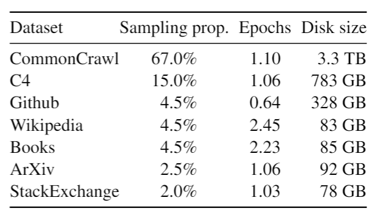

llama
论文地址：LLaMA: Open and Efficient Foundation Language Models | Semantic Scholar
作者都来自Meta AI。
LLaMA是一系列参数大小从7B到65B不等的基础大模型。LLaMA的训练数据都只来源于公开可获得的数据集，但是在模型性能上达到了当时的业界最佳水平。其中LLaMA-13B超过了175B的GPT-3，LLaMA-65B可以和当时最佳模型Chinchilla-70B (DeepMind) 和PaLM-540B (谷歌) 媲美。
所有LLaMA模型都被开源发布到社区: facebookresearch/llama (github.com)。
导言
方法
LLaMA的训练方式与PaLM类似，并且受到了Chinchilla中scaling laws（即模型越大，需要的训练数据也越多）的启发。
预训练数据
LLaMA的训练数据包括1.4 T个tokens，由多个数据源混合组成，如下所示。

Sampling prop.表示采样比例，表示每个数据子集在训练数据中的占比。通过调整不同数据源的采样比例，可以控制模型接触到的数据种类和数量，从而影响模型的学习效果。例如，如果某种类型的数据对模型的训练更有帮助，那么可以增大这部分数据的采样比例，使模型在训练过程中更多地接触到这类数据。
训练数据大部分为经过处理的网络爬虫数据，还包括了Github代码、维基百科、书籍、ArXiv论文和StackExchange问答网站内容等。
架构
相比2017年提出的原始Transformer结构，论文基于其他大模型的工作，采用了一系列改进，具体如下。
Pre-normalization
论文中提到的Pre-normalization方法是指在Transformer模型的每个子层（如自注意力层和前馈神经网络层）的输入进行归一化处理，而不是在输出上进行归一化。这种方法被称为Pre-normalization，与原始的Transformer架构中使用的Post-normalization相对。
具体来说，论文中使用了RMSNorm（Root Mean Square Normalization）作为归一化函数，这是由Zhang和Sennrich在2019年提出的一种归一化技术。RMSNorm计算每个样本的归一化值，通过取其平方根来减少梯度消失的问题，从而提高训练的稳定性。
训练的稳定性是指在训练神经网络，特别是深度学习模型时，模型损失函数的值随时间变化的一致性和可预测性。在训练过程中，如果损失函数的值波动较小，且模型的参数更新方向明确，那么我们说这个训练过程是稳定的。相反，如果损失函数值出现剧烈波动，或者模型在训练过程中出现参数更新方向不明确的情况，那么训练过程就被认为是不稳定的。
在LLaMA模型中，Pre-normalization的使用是为了改善训练过程中的稳定性，这是基于GPT-3的实践经验。通过在每个子层的输入上应用RMSNorm，模型能够更好地处理梯度问题，从而在训练大型语言模型时获得更稳定的性能。
SwiGLU激活函数
原始Transformer使用ReLU作为激活函数，LLaMA模型基于PaLM的实践，采用SwiGLU激活函数来进一步提高模型的性能和效率，使其在各种基准测试中取得更好的结果。
SwiGLU（Switched Gate Linear Unit）激活函数是一种在Transformer架构中用于替代传统ReLU（Rectified Linear Unit）激活函数的非线性函数。SwiGLU激活函数由Shazeer等人在2020年提出，旨在改进模型的性能。
SwiGLU激活函数的定义如下：$SwiGLU(x)=x⋅ReLU(x)$。
SwiGLU激活函数的主要好处包括：提供了比ReLU更强的非线性，这有助于模型捕捉更复杂的数据模式；计算效率高；使用SwiGLU激活函数的模型在各种自然语言处理任务上都显示出了性能的提升等。
和PaLM不同，LLaMA使用了$4 \frac{2}{3}d$作为SwiGLU的输入维度。
这种调整可能是为了优化模型的性能或效率。通过减少维度参数，可以减少模型的计算负担和内存需求，同时可能还能提高模型的训练和推理速度。此外，这种调整可能是基于实验结果，即在LLaMA模型的特定上下文中，使用$4 \frac{2}{3}d$的维度参数能够带来更好的性能或效率提升。
在深度学习模型的设计中，对激活函数的这种微调是常见的实践，目的是为了找到最适合特定模型和任务的参数设置。
RoPE（旋转位置编码）
论文参考GPTNeo的实践，采用RoPE作为位置编码的方法。
位置编码（Positional Encoding）是自然语言处理（NLP）中Transformer架构及其衍生模型的一个关键组成部分。在处理序列数据（如文本）时，顺序或位置信息对于理解上下文和生成准确的输出至关重要。然而，原始的Transformer模型的自注意力机制并不直接处理序列中元素的顺序信息，因为它仅关注输入元素之间的关系，而不考虑它们在序列中的位置。
为了解决这个问题，位置编码通过向输入序列的每个元素添加额外的信息来编码其在序列中的位置。这样，模型就可以利用这些编码来理解不同元素之间的相对或绝对位置关系。位置编码通常被添加到输入嵌入（input embeddings）中，以便模型在进行自注意力计算时能够考虑到位置信息。
旋转位置编码通过在每个Transformer层中对位置信息进行旋转变换来编码位置，使得位置信息在模型的每个层级中以不同的方式表示。RoPE通过旋转操作将位置信息整合到自注意力机制中，从而提高模型对位置信息的感知能力。
优化器
LLaMA模型使用了AdamW优化器进行训练。AdamW是一种自适应学习率优化算法，它是Adam优化器的一个变种，由Loshchilov和Hutter在2017年提出。AdamW在自适应学习率调整的基础上引入了权重衰减（weight decay）的改进，这有助于防止过拟合并提高模型的泛化能力。
AdamW的主要特点是它将权重衰减项与学习率调整分离，使得权重衰减可以独立于学习率调整。在标准的Adam优化器中，权重衰减是与梯度更新同时进行的，而在AdamW中，权重衰减被应用在梯度更新之前。这样做的好处是可以更清晰地分离学习率调整和正则化，从而使得学习率调整更加稳定。
在使用AdamW时，LLaMA模型设置了以下超参数：
- 学习率（learning rate）：使用了一个较小的学习率，例如3.0e-4、1.5e-4或2.0e-4，具体取决于模型的大小。
- β1和β2：分别设置为0.9和0.95，这两个参数控制着梯度的指数衰减。
- 权重衰减（weight decay）：设置为0.1，用于正则化模型，防止过拟合。
- 梯度裁剪（gradient clipping）：使用了一个阈值，例如1.0，以防止梯度爆炸问题。
此外，LLaMA模型还使用了余弦退火学习率调度（cosine learning rate schedule），这意味着学习率会随着训练的进行而逐渐减小，最后降至最大学习率的10%。这种调度策略有助于在训练初期快速收敛，在训练后期则通过减小学习率来细化模型的权重。
通过这些优化策略，LLaMA模型能够在保持训练稳定性的同时，有效地调整模型参数，以达到更好的性能。
高效的实现
对多头注意力算子进行了高效实现。